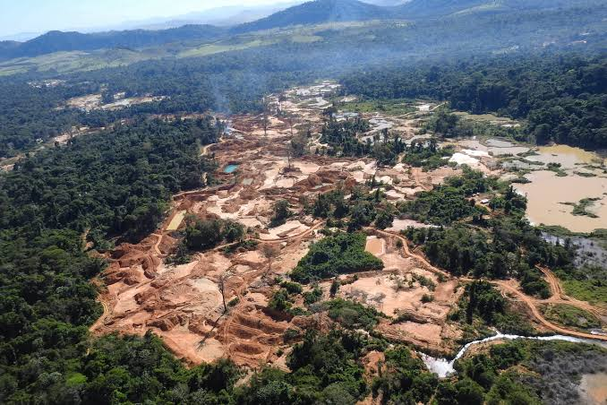
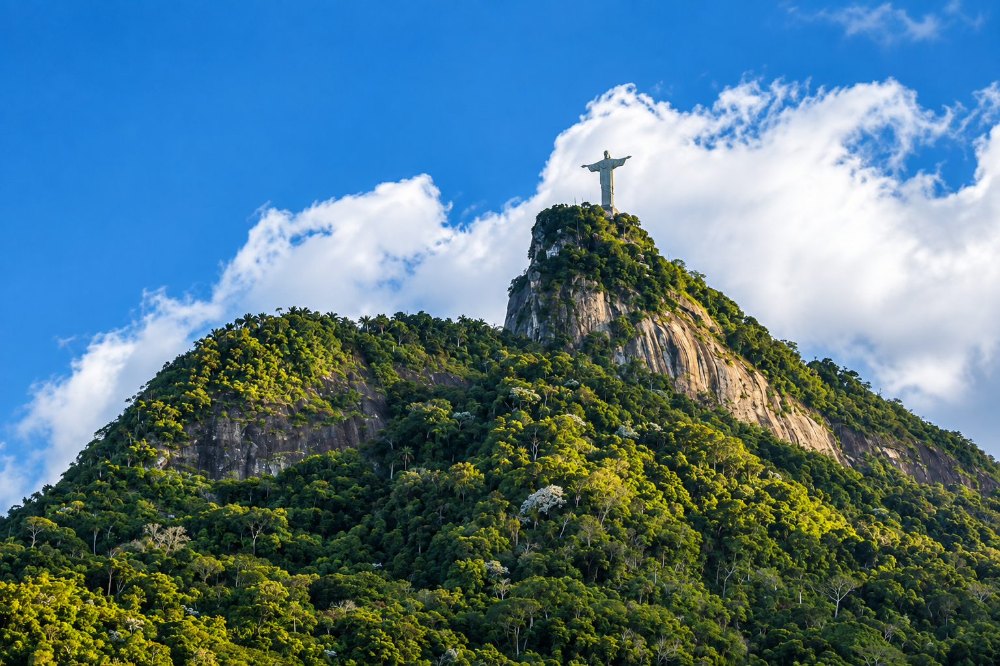
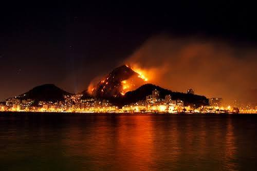

01
Poluição
Lixo e resíduos chegam aos rios, praias e áreas verdes, prejudicando a fauna e a qualidade da água.
Preservar a Mata Atlântica é proteger a vida que existe ao nosso redor.
Um convite para conhecer a riqueza natural fluminense e assumir atitudes que mantêm nossas florestas, animais e paisagens vivos.
Conheça o projetoA ODS 15 propõe proteger, restaurar e usar de forma sustentável os ecossistemas terrestres. No Rio de Janeiro, isso significa cuidar da Mata Atlântica, da fauna, da flora e das áreas naturais que formam o nosso estado.

Do Parque Nacional da Tijuca à Serra dos Órgãos, o estado reúne florestas, montanhas, rios e praias que abrigam uma biodiversidade única. Preservar esses ambientes é manter o equilíbrio das cidades e da vida fluminense.

.jpg)
Florestas preservadas ajudam a proteger nascentes, regular o clima e garantir abrigo para espécies como o mico-leão-dourado.
Reconhecer os problemas é o primeiro passo para transformar escolhas em cuidado.

Lixo e resíduos chegam aos rios, praias e áreas verdes, prejudicando a fauna e a qualidade da água.
.jpg)
A retirada da vegetação fragmenta habitats, enfraquece nascentes e ameaça espécies da Mata Atlântica.

O fogo destrói plantas, afasta animais e pode se espalhar rapidamente em períodos de seca.
“Cuidar da natureza é cuidar da vida.”
Veja o vídeo do Natureza Viva e entenda por que a preservação da natureza do Rio de Janeiro depende de todos.